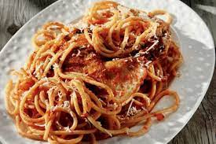

Pastitsada

Description
Pastitsada is a traditional Corfiot dish. It consists of rooster and pasta with tomato sauce and a special mix of
herbs and spices called "Spetseriko"
Ingredients
For the Spetseriko
- 10 grams grated cloves
- 50 grams cinnamon
- 100 grams sweet chili flakes
- 50 grams cumin
- 20 grams grated allspice
- 50 grams nutmeg
- 80 grams sweet paprika
- 25 Laurel leaves, powdered
- 20 grams black pepper
For the rest
- 1.5 to 2 kilos wild rooster cut in portions
- 4 big thinnly-cut onions
- 4 soup spoons tomato paste
- 300 grams extra virgin olive oil
- 2 soup spoons vegetable butter
- 80 grams vinegar from red wine
- 1 soup spoon sugar
- Salt and Pepper
- 1-2 soup spoons Spetseriko
- 200 grams red wine
- 2-3 cups hot water
- 2 packages of pasta
- Grated cheese (Preferably Kefalotyri)
Steps
- We mix together all the herbs and spices to make the Spetseriko
- We put the pot on the fire and throw inside the olive oil and the vegetable butter
- We saute the rooster with the skin on the pan and then we add the onions and the garlic
- When the onions get some color we add the wine and let it vaporize
- We then throw in the tomato paste and we add hot water until we almost cover everything
- We stir and add 2 spoons of Spetseriko, sugar, salt and pepper
- We turn the fire down, cover the pot and let it cook slowly for about 2 hours
- We cook the pasta
- We serve with grated cheese on top